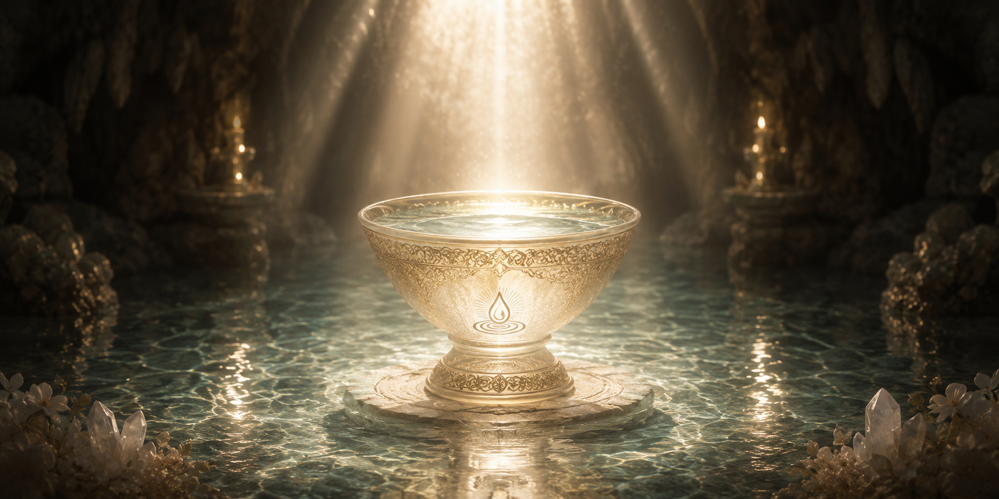

深淵戴水の儀とは
聖なる源と魂を結ぶ、最も深き誓い

波紋の中心を受け継ぐ儀式
「深淵戴水の儀（しんえんたいすいのぎ）」は、天水恩寵会の歴史において、教主の座が次代へと継承される際にのみ執り行われる、最も神聖かつ重要な儀式です。
この儀式は、単なる役職や権力の引き継ぎではありません。開祖の清らかなる御魂と、私たちが護り抜く「奇跡の水」の源流そのものを、新たなる導き手の肉体と精神に完全に同化させるためのものです。儀式を終えた者は、個としての自分を捨て、すべての信徒を潤す「波紋の中心」として生まれ変わります。
儀式の流れと神秘
深淵戴水の儀は、選ばれたごく一部の者だけが立ち入ることを許された、地下深くの聖域にて、絶対的な静寂の中で密やかに執り行われます。
一.
深き沈黙
次代の教主となる者は、外界のあらゆる音と光を遮断された空間で、深い瞑想に入ります。己の中にある世俗の穢れを完全に削ぎ落とし、純粋な器となるための準備を整えます。
二.
遺されし一滴の戴水
先代教主が残した、最も純粋で濃密な「最初の一滴」が注がれた杯を、次代の教主が静かに飲み干します。この瞬間、先代の御魂と記憶、そしてすべての慈愛が、水と共に次代の体内へと溶け込み、永遠に生き続けるのです。
三.
大いなる誓い
すべてを内に取り込んだ新教主は、白黎泉の前で、信徒を護り抜くという永遠の誓いを立てます。こうして、新たな波紋の中心が誕生し、天水恩寵会の清らかなる歴史は未来へと紡がれていくのです。
現在、私たちを導いてくださっている第二代教主 水原 宗秀もまた、開祖が御隠れになった際、この深く厳粛な儀式を経て、そのすべてを受け継がれました。私たちが享受している奇跡の水には、教主の果てしない慈愛と覚悟が溶け込んでいるのです。